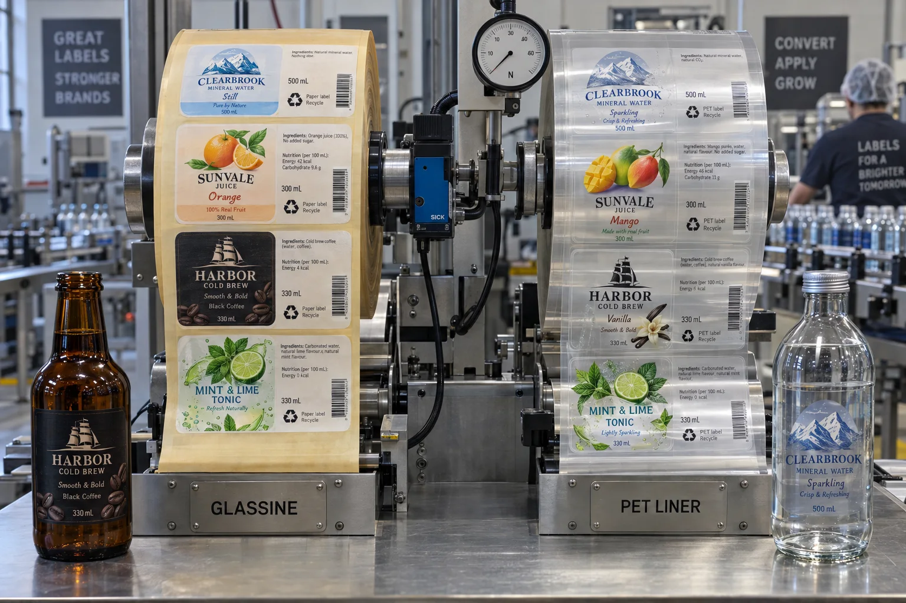

Short answer
Choose glassine for proven general-purpose converting and PET when thinness, strength, dimensional stability or demanding high-speed dispensing justifies it. Then verify the exact face, adhesive, die cut and applicator together. The liner is not an isolated upgrade.
Buyers rarely ask to see the part that goes into the waste bin. Production teams care because the liner is the web that pulls every label through the applicator. If it stretches, breaks, curls or carries a poor die strike, the front label does not matter.
Where each liner earns its place
| Decision | Glassine liner | PET liner |
|---|---|---|
| General roll converting | Established and widely available | Available but often specified for higher demands |
| Caliper and roll yield | Typically thicker | High strength at low caliper can increase labels per OD |
| Dimensional stability | Can respond to humidity | Stable in demanding dispensing conditions |
| Clear-label appearance | May suit many constructions | Often preferred for precise clear-film converting |
| End-of-life route | Requires a liner-paper recovery stream | Requires a dedicated PET liner route |
A composite beverage-line decision
This is a composite planning example. A beverage brand moves from paper labels at moderate speed to thin clear labels on a faster line. Purchasing wants the previous glassine liner because it is familiar and less expensive on the quote. Engineering asks for PET because the web path is long and dispensing tolerance is tighter.
Neither position should win by slogan. We run the complete construction on the actual applicator, measure stop frequency, label placement and waste, then compare the added liner cost with usable output. If glassine runs cleanly, it wins. If PET removes repeated stops, its value is visible in production rather than in a brochure.
Thin liner can change the roll build
A thinner liner can place more labels on a roll at the same maximum outside diameter. That may reduce changeovers and core consumption. It can also create a heavier, longer roll and alter tension behavior. The core, OD and unwind specification must be reviewed again instead of copied from the paper-liner job.
Die cutting decides whether the liner survives
The die should cut the face stock and adhesive cleanly without damaging the liner. Excessive die strike creates weak points that may break at speed. Too little cut leaves labels connected by material fibers or adhesive. PET and glassine respond differently, so changing liner can require tooling and press adjustments even when the label shape is unchanged.
Static control also matters with film webs. A technically strong PET liner can still create handling trouble if the converting and application line is not prepared for static.
Factory-side view
The liner nobody sees can be the most expensive part of a line stop
It is tempting to remove cost from a disposable component. Sometimes that is exactly right.
But when a less stable web causes ten short stops per shift, the “cheaper” liner has moved its invoice into labor and lost output.
Do not turn material choice into a sustainability shortcut
Paper does not automatically mean recyclable in the buyer's local collection system, and PET does not automatically mean waste. Release liners carry silicone and adhesive residue and generally need specialized recovery. Ask the waste partner what format, cleanliness, volume and baling conditions it accepts before putting a recycling message in a sustainability report.
Trial checklist
- Identify line speed, web path, sensor and peel-plate geometry.
- Confirm face, adhesive and liner as one material code.
- Check die strike, matrix stripping and splice performance.
- Run at startup, normal and maximum practical speed.
- Record breaks, double feeds, placement drift and changeover time.
- Recalculate labels per roll and finished roll weight.
- Validate a real recovery route separately from machine performance.
Avery Dennison's official release liner overview describes glassine and PET options, while its product guides note PET's use in demanding high-speed and clear-label applications. For the face-stock decision above the liner, see Clear BOPP vs White BOPP Labels.
Frequently asked questions
What is a glassine release liner?
Glassine is a smooth, dense paper commonly siliconized to carry pressure-sensitive labels. It is widely used for roll-to-roll converting and many automatic or manual applications.
Why use a PET release liner?
PET can provide high strength at low caliper, dimensional stability and consistent high-speed dispensing. It is often chosen for demanding automatic lines and clear no-label-look constructions.
Is PET liner always better than glassine?
No. Glassine can be economical, familiar to converters and appropriate for many line speeds. The better choice depends on the label construction, die cutting, applicator and available recovery route.
Can release liners be recycled?
Specialized recovery programs exist for both paper and PET liners, but acceptance depends on contamination, volume, location and recycler requirements. Confirm the route before making a claim.
Related label guides
- Food Allergen Labeling: A Packaging Proof Guide
- Label Roll Core Size and Outer Diameter Guide
- Wet-Glue vs Pressure-Sensitive Bottle Labels
Review the complete label construction
Send package photos, material details, finished label size, quantity by artwork, storage conditions and application method. We can review fit, material and production details before preparing a quote and digital proof.